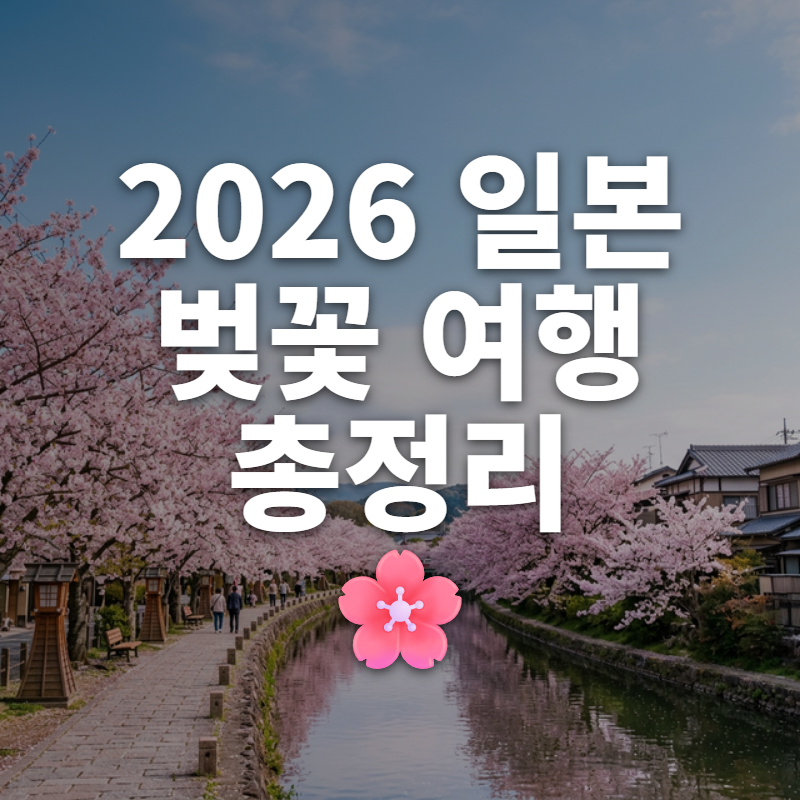
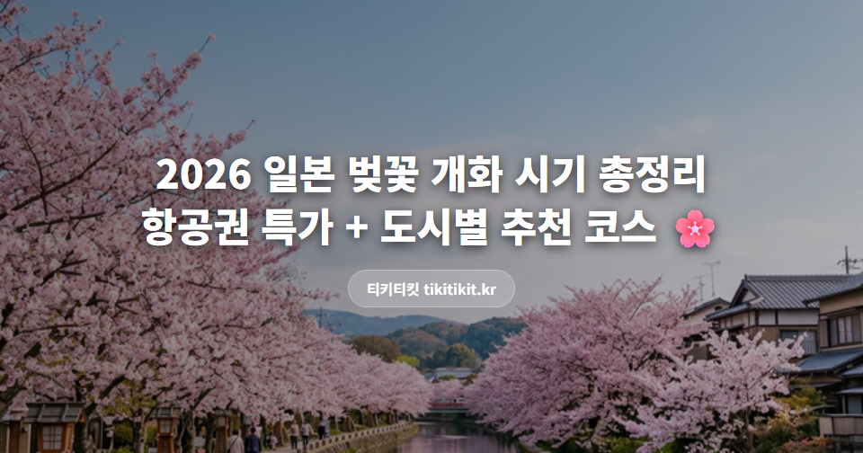

2026 일본 벚꽃 개화 시기 총정리 🌸 항공권 특가 + 도시별 추천 코스
안녕하세요, 티키티킷입니다.
해마다 이맘때가 되면
일본 벚꽃 여행 계획 세우시는 분들 많으시죠?
근데 "어디를 언제 가야 벚꽃을 제대로 볼 수 있는지"
의외로 헷갈리는 분들이 많더라고요.
그래서 준비했습니다!
도시별 개화 시기 + 추천 코스 + 땡처리 항공권 특가까지
한번에 정리해볼게요 👇
🌸 2026년 일본 벚꽃 개화 캘린더
일본 벚꽃은 남쪽에서 북쪽으로 올라가며 핍니다.
같은 3월이라도 도시마다 타이밍이 완전히 달라요.
| 도시 | 개화 시작 | 만개 시기 | 추천 방문일 |
|---|---|---|---|
| 🌸 후쿠오카 | 3월 중순 | 3월 하순 | 3/22~4/2 |
| 🌸 나가사키 | 3월 중순 | 3월 하순 | 3/23~4/3 |
| 🌸 오사카 | 3월 하순 | 4월 초 | 3/28~4/7 |
| 🌸 교토 | 3월 하순 | 4월 초 | 3/29~4/8 |
| 🌸 도쿄 | 3월 하순 | 4월 초 | 3/26~4/5 |
💡 꿀팁: 만개일 기준 앞뒤 3~4일이 가장 예쁜 시기입니다.
다만 만개 직후 비가 오면 하루 만에 질 수도 있어서, 개화~7부 개화 시점에 맞추면 벚꽃도 보고 리스크도 줄일 수 있어요.
✈️ 도시별 추천 코스 + 특가 노선
1. 후쿠오카 — 가장 빨리, 가장 싸게 🏆
개화: 3월 중순 ~ 3월 하순
왜 좋은가: 한국에서 가장 가깝고(비행 1시간), 벚꽃도 일본에서 가장 먼저 핍니다.
🌸 벚꽃 명소: 마이즈루 공원, 니시 공원, 오호리 공원
🍜 덤: 하카타 라멘, 모츠나베, 야타이(포장마차) 거리
특가 노선:
· 부산 → 후쿠오카 | 왕복 18~28만원대 (에어부산, 진에어)
· 인천 → 후쿠오카 | 왕복 25~40만원대
✈️ 부산 출발이 거의 절반 값입니다. 수도권이어도 KTX 타고 가는 게 이득일 수 있어요!
📸 [이미지 삽입] 후쿠오카 벚꽃 사진
마이즈루 공원 or 니시 공원 벚꽃 (Unsplash: "fukuoka cherry blossom")
2. 오사카·교토 — 벚꽃의 정석 📸
개화: 3월 하순 ~ 4월 초
왜 좋은가: 역사적인 절과 성곽 + 벚꽃 조합이 압도적. 한 번은 꼭 봐야 할 풍경.
🌸 오사카 명소: 오사카성 공원, 조폐국 벚꽃길 (야간 개방!)
🌸 교토 명소: 철학의 길, 기요미즈데라, 아라시야마
특가 노선:
· 인천 → 오사카 | 왕복 30~50만원대 (피치항공, 제주항공)
✈️ 오사카는 벚꽃 시즌에 항공권이 빨리 마감돼요. 3월 초에 잡는 걸 추천합니다.
📸 [이미지 삽입] 오사카성 or 교토 벚꽃 사진
오사카성 + 벚꽃 or 철학의 길 (Unsplash: "osaka castle sakura")
3. 나가사키·사세보 — 숨은 보석 💎
개화: 3월 중순 ~ 3월 하순
왜 좋은가: 오사카·도쿄에 비해 관광객이 적고, 가격도 저렴합니다.
🌸 벚꽃 명소: 글로버 가든, 니시야마 공원, 하우스텐보스
🍽️ 덤: 나가사키 짬뽕, 카스테라, 사세보 버거
특가 노선:
· 부산 → 나가사키 | 왕복 18~25만원대
✈️ 10만원대에 일본 벚꽃 여행이 가능한 거의 유일한 루트예요.
4. 도쿄 — 도심 속 벚꽃 🗼
개화: 3월 하순 ~ 4월 초
왜 좋은가: 도심 곳곳에서 벚꽃을 즐길 수 있고, 쇼핑·맛집까지 한번에.
🌸 벚꽃 명소: 우에노 공원, 메구로가와, 치도리가후치, 신주쿠 교엔
특가 노선:
· 인천 → 나리타/하네다 | 왕복 35~55만원대
✈️ 도쿄는 벚꽃 시즌 항공권이 가장 비싼 편이에요. 땡처리를 노리면 절반 가격에 잡을 수 있습니다.
📸 [이미지 삽입] 도쿄 벚꽃 사진
메구로가와 or 우에노 공원 (Unsplash: "tokyo meguro river sakura")
📊 한눈에 비교
| 도시 | 만개 시기 | 왕복 특가 | 추천 대상 |
|---|---|---|---|
| 후쿠오카 | 3월 하순 | 18만원대~ | 가성비 최고 |
| 나가사키 | 3월 하순 | 18만원대~ | 한적한 여행 |
| 오사카 | 4월 초 | 30만원대~ | 첫 일본 여행 |
| 도쿄 | 4월 초 | 35만원대~ | 도시+쇼핑 |
*가격 데이터 출처: 티키티킷(tikitikit.kr) 2026년 2월 기준
💰 벚꽃 시즌 항공권 싸게 사는 팁
1. 출발지를 바꿔보세요
인천 출발 평균 40~50만원대인 노선이, 부산 출발 땡처리로 바꾸면 20만원대에 나오는 경우가 있어요.
2. 만개일 직전을 노리세요
만개일~만개 후 3일은 최고 성수기. 개화~7부 개화 시점에 가면 가격도 싸고 벚꽃도 충분히 예뻐요.
3. 후쿠오카·나가사키부터 확인하세요
벚꽃이 가장 먼저 피고, 항공권도 가장 저렴한 도시입니다. 20만원대로 벚꽃 여행이 가능한 거의 유일한 루트예요.
4. 평일 출발이 핵심
금~일 출발은 주중 대비 5~10만원 비쌉니다. 화~목요일 출발을 노려보세요.
주변에서 만개일 맞춰 갔다가
비 와서 다 졌다는 얘기를 너무 많이 들었습니다. 😇
벚꽃 여행 실패담이든 성공담이든
댓글로 공유해주세요 🙏
P.S. 여행사 땡처리 특가 비교는 tikitikit.kr에서 하고 있습니다.
#일본벚꽃 #벚꽃여행 #2026벚꽃 #일본벚꽃개화시기 #벚꽃항공권 #일본항공권싸게사는법 #후쿠오카벚꽃 #오사카벚꽃 #교토벚꽃 #나가사키여행 #벚꽃시즌항공권 #부산출발일본 #땡처리항공권 #일본특가항공권 #티키티킷